Exam Anxiety Gender Anxiety_1
1 29 91 Male high
2 79 76 Female high
3 41 75 Male high
4 88 52 Female low
5 94 56 Male low
6 5 95 Female highLecture 14
Bootstrap & Simulation
Hu Chuan-Peng
2023-12-12
本次课内容
Bootstrap
Simulation
回顾
非参数检验
符号检验 (Sign test)
符号秩次检验 (Signed rank test, Wilcoxon test)
秩和检验 (Mann-Whitney-Wilcoxon rank sum test)
中位数检验 (Median test)
置换检验 (Permutation Test)
置换检验(Permutation)
- Permutation用于确定观察到的效果是否可以合理归因于在选择样本时引入的随机性。如果拒绝零假设，我们有证据表明样本中观察到的效应反映了自变量在人群中存在影响。
Permutation

General flow of permutation tests
获得样本统计数据
采用不放回的方式随机抽取样本，构建\(H_0\)假设的抽样分布
通过在零假设前提下得到抽样分布的观察值进行统计推断
Part 1 Bootstrap
Bootstrap
Bootstrap(自抽法、自举法)是非参数统计中一种参数估计的方法。
无需假设一个特定的理论分布，通过对当前数据集进行有放回的重抽样以创建多个模拟数据集，生成一系列待检验统计量的经验分布，可以计算标准误差、构建置信区间。
Bootstrap

https://hranalyticslive.netlify.app/9-confidence-intervals.html
Bootstrap

https://arifromadhan19.medium.com/resampling-methods-a-simple-introduction-to-the-bootstrap-method-3a36d076852f
General flow of Bootstrap
采取有放回抽样从原始样本抽取一定数量的子样本
根据子样本计算统计量
重复前面两步k次，得到k个统计量的估计值
根据k个估计值获得统计量分布，计算置信区间
Bootstrap: Estimating correlation
- 某研究者想探究焦虑与考试成绩之间的相关关系，在考试之前对103名同学进行了焦虑程度的测量。
Bootstrap: Estimating correlation
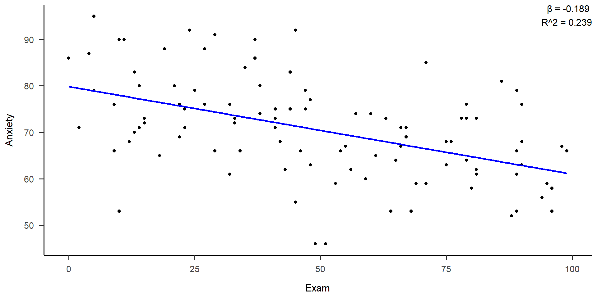Bootstrap: Estimating correlation
expand for full code
# Bootstrap抽样函数,抽取50个子样本
bootstrap_sample <- function(data,size=50) {
n <- nrow(data)
indices <- sample(1:n, replace = TRUE, size = size)
bootstrap_sample <- data[indices, ]
return(bootstrap_sample)
}
# 重复抽样3次
k <- 3
# 存储统计量和回归模型
statistics_beta <- numeric(k)
statistics_R2 <- numeric(k)
models <- list()
# 进行bootstrap抽样、计算统计量、绘制散点图和拟合直线
for (i in 1:k) {
#抽样
bootstrap_sample_data <- bootstrap_sample(data,size=50)
# 计算统计量 beta 和 R^2
x <- bootstrap_sample_data$Exam
y <- bootstrap_sample_data$Anxiety
model <- lm(y ~ x)
beta <- coef(model)[2]
R2 <- summary(model)$r.squared
# 存储统计量和回归模型
statistics_beta[i] <- beta
statistics_R2[i] <- R2
models[[i]] <- model
# 绘制散点图和拟合直线
p <- ggplot(bootstrap_sample_data, aes(x = Exam, y = Anxiety)) +
geom_point() +
geom_smooth(method = "lm", se = FALSE, color = "red", linetype = "solid", size = 2) +
labs(title = paste("Bootstrap Sample", i), x = "Exam", y = "Anxiety") +
annotate("text", x = Inf, y = Inf, label = paste("β =", round(beta, 3), "\nR^2 =", round(R2, 3)),
hjust = 1, vjust = 1, size = 4, color = "black") +
theme_apa() #
print(p)
}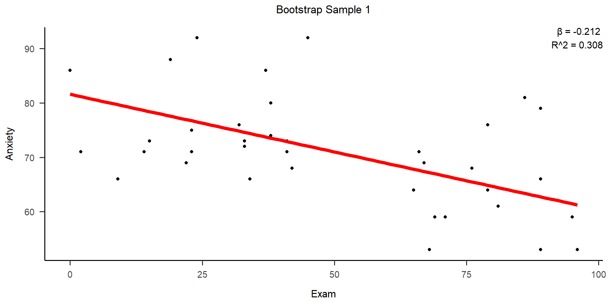
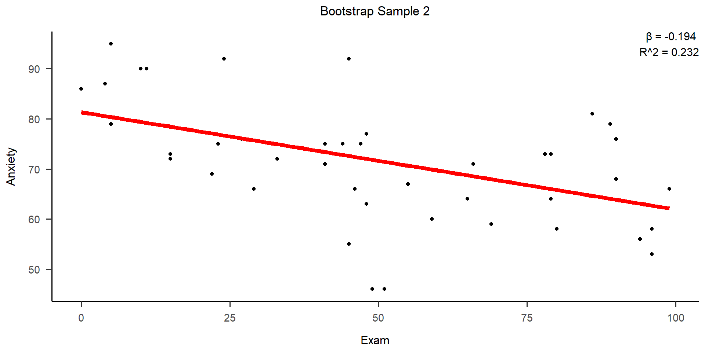
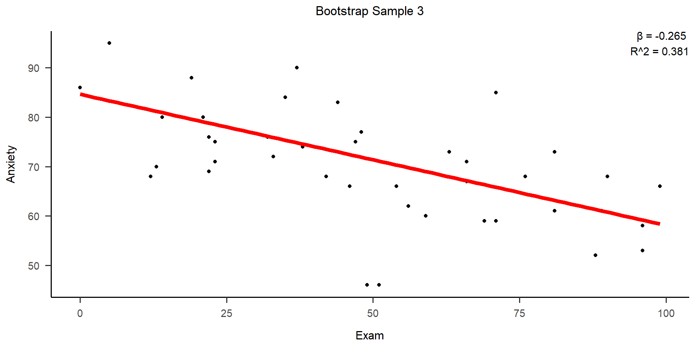
估计焦虑与考试成绩的相关系数
expand for full code
library(boot)
# 定义相关系数的统计量函数
statistic <- function(data, indices) {
sampled_data <- data[indices, ]
model <- lm(sampled_data$Anxiety ~ sampled_data$Exam)
beta <- coef(model)[2]
return(beta)
}
# 进行1500次bootstrap抽样与计算统计量
bootstrap_results <- boot(data = data, statistic = statistic, R = 1500)
# 绘制beta的直方图
hist(bootstrap_results$t, main = "Bootstrap Distribution of Beta",
xlab = "Beta Coefficient", ylab = "Density", col = "grey", freq = FALSE, breaks = 100)
mean_beta <- mean(bootstrap_results$t)
abline(v = mean_beta, col = "green", lty = 2)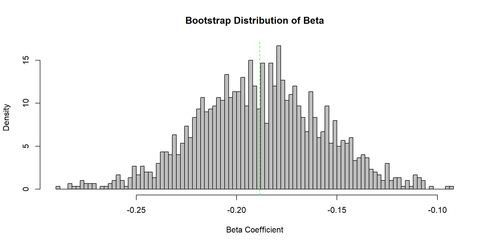
expand for full code
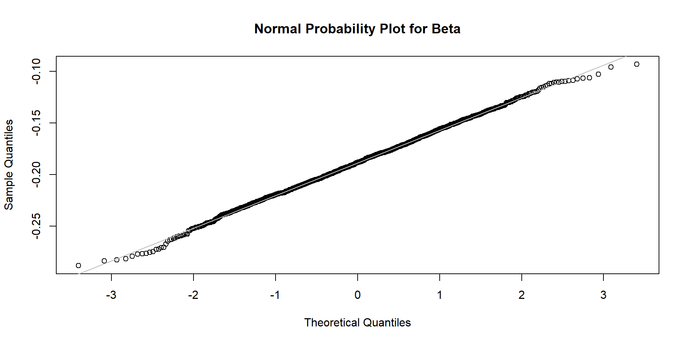
BOOTSTRAP CONFIDENCE INTERVAL CALCULATIONS
Based on 1500 bootstrap replicates
CALL :
boot.ci(boot.out = bootstrap_results, type = "bca")
Intervals :
Level BCa
95% (-0.2510, -0.1254 )
Calculations and Intervals on Original Scale估计焦虑与考试成绩的决定系数。
expand for full code
library(boot)
# 定义决定系数的统计量函数
statistic <- function(data, indices) {
sampled_data <- data[indices, ]
model <- lm(sampled_data$Anxiety ~ sampled_data$Exam)
R2 <- summary(model)$r.squared
return(R2)
}
# 进行1500次bootstrap抽样与计算统计量
bootstrap_results <- boot(data = data, statistic = statistic, R = 1500)
# 绘制beta的直方图
hist(bootstrap_results$t, main = "Bootstrap Distribution of R^2",
xlab = "R^2", ylab = "Density", col = "grey", freq = FALSE, breaks = 100)
mean_R2 <- mean(bootstrap_results$t)
abline(v = mean_R2, col = "green", lty = 2)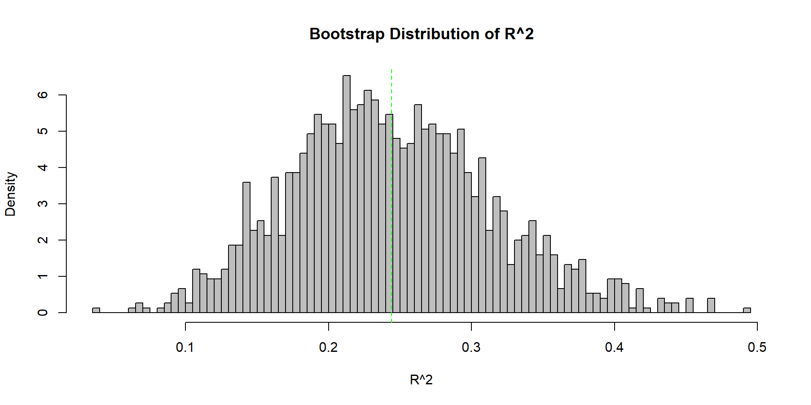
expand for full code
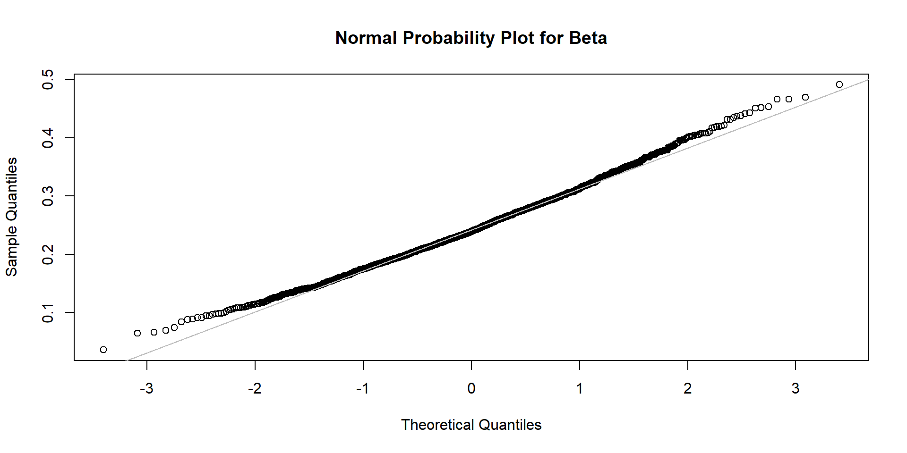
BOOTSTRAP CONFIDENCE INTERVAL CALCULATIONS
Based on 1500 bootstrap replicates
CALL :
boot.ci(boot.out = bootstrap_results, type = "bca")
Intervals :
Level BCa
95% ( 0.1130, 0.3902 )
Calculations and Intervals on Original ScaleBootstrap: Estimating standardized diff
某研究者想探究焦虑对考试成绩的影响大小。
现有高焦虑与低焦虑两组被试，共103名被试
Exam Anxiety Gender Anxiety_1
1 29 91 Male high
2 79 76 Female high
3 41 75 Male high
4 88 52 Female low
5 94 56 Male low
6 5 95 Female highBootstrap: Estimating standardized diff
\(Cohen'd = \frac{M_A - M_B}{s}\)
\(s = \sqrt{(SS_A + SS_B)/(n_A + n_B - 2)}\)
[1] "Cohen′d = -0.906381585851366"估计焦虑对考试成绩影响的效应大小
expand for full code
# 定义Cohen's d的统计量函数
bootstrap_cohens_d <- function(data, indices) {
sampled_data <- data[indices, ]
group_A <- subset(sampled_data, Anxiety_1 == "high")$Exam
group_B <- subset(sampled_data, Anxiety_1 == "low")$Exam
mean_A <- mean(group_A)
mean_B <- mean(group_B)
SS_A <- sum((group_A - mean_A)^2)
SS_B <- sum((group_B - mean_B)^2)
n_A <- length(group_A)
n_B <- length(group_B)
cohen.d <- (mean_A - mean_B) / sqrt((SS_A + SS_B) / (n_A + n_B - 2))
return(cohen.d)
}
# 进行1500次Bootstrap
bootstrap_results <- boot(data = data, statistic = bootstrap_cohens_d, R = 1500)
# 绘制Cohen's d的直方图
hist(bootstrap_results$t, main = "Bootstrap Distribution of Cohen's d",
xlab = "Cohen's d", ylab = "Density", ", col = 'grey", freq = FALSE, breaks = 100)
mean_d <- mean(bootstrap_results$t)
abline(v = mean_d, col = 'green', lty = 2)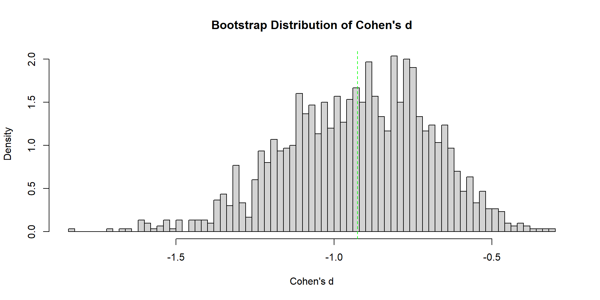
expand for full code
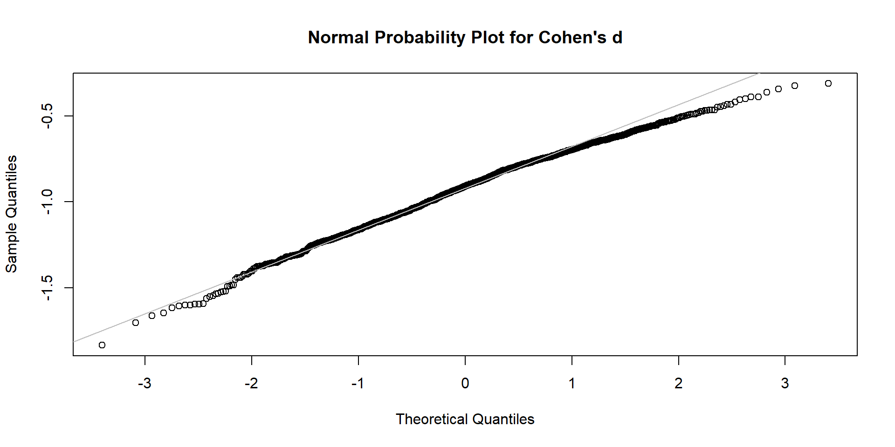
BOOTSTRAP CONFIDENCE INTERVAL CALCULATIONS
Based on 1500 bootstrap replicates
CALL :
boot.ci(boot.out = bootstrap_results, type = "bca")
Intervals :
Level BCa
95% (-1.3630, -0.4959 )
Calculations and Intervals on Original ScaleBootstrap优点
简单性，可以为分布的复杂估计量（如百分位数、比例、比值比和相关系数）导出标准误差和置信区间的估计值。
可以应用于复杂的采样设计（例如，对于划分为s个层的人口，每个层有n个观测值，自举法可以应用于每个层）。
控制和检查结果稳定性的适当方法。
与使用样本方差和正态性假设获得的标准区间相比，bootstrap是渐近更准确的。 避免了重复实验以获得其他组的成本。
Bootstrap局限
不适用于数据量太小，无法代表感兴趣的总体的数据
不适用于数据存在许多异常值的情况
不能提供一般的有限样本保证，结果可能取决于样本的代表性
使用过程要确保样本内数据的独立性或足够大的样本量
Bootstrap vs Permutation
Permutation对数据样本采用不放回抽样，常用于假设检验，关注使用样本推断两个样本是否来自同一总体，自变量的效应是否存在。
Bootstrap对数据样本采取有放回抽样，利用非参方法进行区间估计，关注数据本身，进行预期效果的定量假设测试。
Part 2 Simulation
例子：想要探究某种干预方法能不能有效的调节考试焦虑
我们设计了一个干预实验设计，通过随机干预/控制组实验来检验该方法。
我们想在搜集实验数据前先完成数据分析的过程，并了解需要多少样本量比较合理。该如何做呢？
将实验处理记为A，干预组为A1，控制组为A2。
根据经验，使用特定量表测量焦虑时，总分是连续数据，均值约为70，标准差约为10。
我们能否生成一批假数据，来帮助完成数据分析，并估计合理的样本量？
生成模型
生成模型：以特定模式生成新数据的模型。
生成”假”数据，帮助我们更好地理解实验设计。
R可用来来生成简单的假数据

在R中生成服从正太分布的假数据
set.seed(123)
norm_data <- rnorm(100, mean = 5, sd = 2)
df <- data.frame(Values = norm_data)
norm_data [1] 3.8790487 4.5396450 8.1174166 5.1410168 5.2585755 8.4301300 5.9218324
[8] 2.4698775 3.6262943 4.1086761 7.4481636 5.7196277 5.8015429 5.2213654
[15] 3.8883177 8.5738263 5.9957010 1.0667657 6.4027118 4.0544172 2.8643526
[22] 4.5640502 2.9479911 3.5422175 3.7499215 1.6266134 6.6755741 5.3067462
[29] 2.7237261 7.5076298 5.8529284 4.4098570 6.7902513 6.7562670 6.6431622
[36] 6.3772805 6.1078353 4.8761766 4.3880747 4.2390580 3.6105860 4.5841654
[43] 2.4692073 9.3379119 7.4159240 2.7537828 4.1942303 4.0666893 6.5599302
[50] 4.8332619 5.5066370 4.9429065 4.9142591 7.7372046 4.5484580 8.0329412
[57] 1.9024944 6.1692275 5.2477085 5.4318831 5.7592790 3.9953531 4.3335852
[64] 2.9628492 2.8564175 5.6070573 5.8964196 5.1060085 6.8445349 9.1001694
[71] 4.0179377 0.3816622 7.0114770 3.5815985 3.6239828 7.0511427 4.4304540
[78] 2.5585646 5.3626070 4.7222173 5.0115284 5.7705608 4.2586799 6.2887531
[85] 4.5590269 5.6635639 7.1936780 5.8703630 4.3481368 7.2976152 6.9870077
[92] 6.0967939 5.4774635 3.7441878 7.7213049 3.7994808 9.3746660 8.0652213
[99] 4.5285993 2.9471582描述假数据
vars n mean sd median trimmed mad min max range skew kurtosis se
X1 1 100 5.18 1.83 5.12 5.16 1.78 0.38 9.37 8.99 0.06 -0.22 0.18查看数据拟合程度
# 定义似然函数
likelihood <- function(params) {
mu <- params[1] # 均值参数
sigma <- params[2] # 标准差参数
# 计算观测数据的似然值
log_likelihood <- sum(dnorm(norm_data, mean = mu, sd = sigma, log = TRUE))
return(-log_likelihood) # 最大化似然函数等效于最小化相反数
}
# 使用最大似然法进行参数估计
initial_params <- c(mean(norm_data), sd(norm_data)) # 初始参数值
estimated_params <- optim(initial_params, likelihood)$par
# 输出估计的参数值
estimated_mean <- estimated_params[1]
estimated_sd <- estimated_params[2]
print(paste("估计的均值:", estimated_mean))[1] "估计的均值: 5.18095323881682"[1] "估计的标准差: 1.81650152159132"expand for full code
# 直方图
hist(norm_data, probability = TRUE, main = "Histogram and PDF Comparison",
xlab = "Values", ylab = "Density", col = "lightblue", border = "black")
# 理论概率密度函数曲线
curve(dnorm(x, mean = 5, sd = 2),
col = "darkred", lwd = 2, add = TRUE, yaxt = "n")
legend("topright", legend = c("Histogram", "theoretical pdf"), fill = c("lightblue", "darkred"))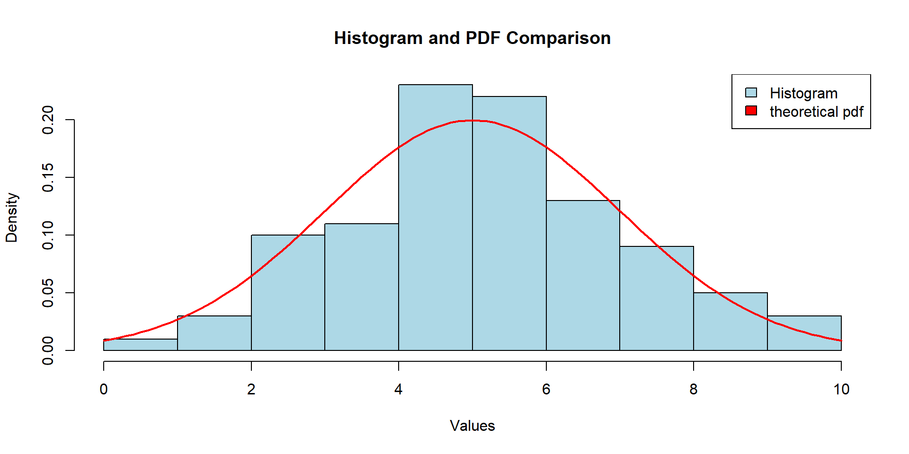

expand for full code
Asymptotic one-sample Kolmogorov-Smirnov test
data: norm_data
D = 0.093034, p-value = 0.3522
alternative hypothesis: two-sided在R中生成服从二项分布的假数据
set.seed(123)
# 成功概率p = 0.5，试验总次数为10
binomial_data <- rbinom(100, 10, 0.5)
df <- data.frame(Values = binomial_data)
binomial_data [1] 4 6 5 7 7 2 5 7 5 5 8 5 6 5 3 7 4 2 4 8 7 6 6 9 6 6 5 5 4 3 8 7 6 6 2 5 6
[38] 4 4 4 3 5 5 4 3 3 4 5 4 7 2 5 6 3 5 4 3 6 7 4 6 3 5 4 6 5 6 6 6 5 6 6 6 0
[75] 5 4 5 5 4 3 4 6 5 6 3 5 8 7 7 4 3 6 4 6 4 4 6 3 5 5描述假数据
vars n mean sd median trimmed mad min max range skew kurtosis se
X1 1 100 4.99 1.57 5 5 1.48 0 9 9 -0.17 0.14 0.16查看数据拟合程度
# 定义似然函数
likelihood <- function(params) {
p <- params[1] # 成功概率参数
# 计算观测数据的似然值
log_likelihood <- sum(dbinom(binomial_data, size = 10, prob = p, log = TRUE))
return(-log_likelihood) # 最大化似然函数等效于最小化相反数
}
# 使用最大似然法进行参数估计
initial_params <- c(0.5) # 初始参数值
estimated_params <- optim(initial_params, likelihood)$par
# 输出估计的参数值
estimated_p <- estimated_params[1]
print(paste("估计的成功概率:", estimated_p))[1] "估计的成功概率: 0.4990234375"expand for full code
# 计算理论的二项分布pdf
x <- seq(0, 10, by = 1)
theory_pdf <- dbinom(x, size = 10, prob = 0.5)
# 绘制直方图
hist(binomial_data, breaks = seq(-0.5, 10.5, by = 1), col = "lightblue", main = "Comparison of Empirical and Theoretical Binomial Distribution", xlab = "Number of Successes")
# 添加理论PDF曲线
lines(x, theory_pdf * length(binomial_data), type = "h", col = "red", lwd = 2)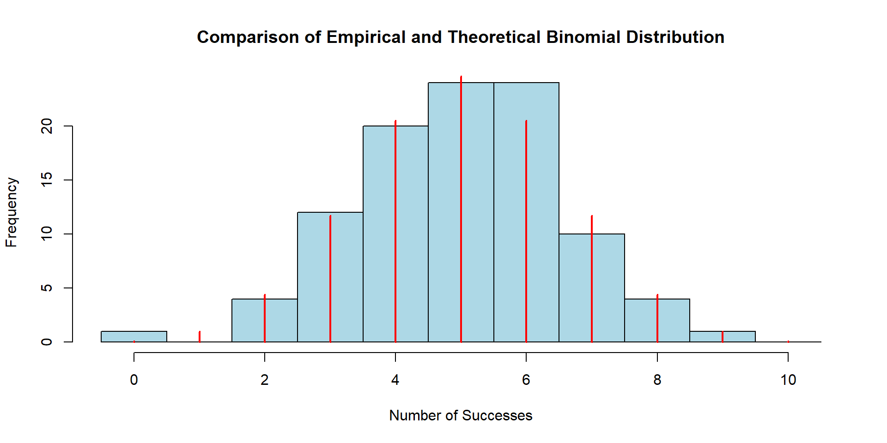
expand for full code
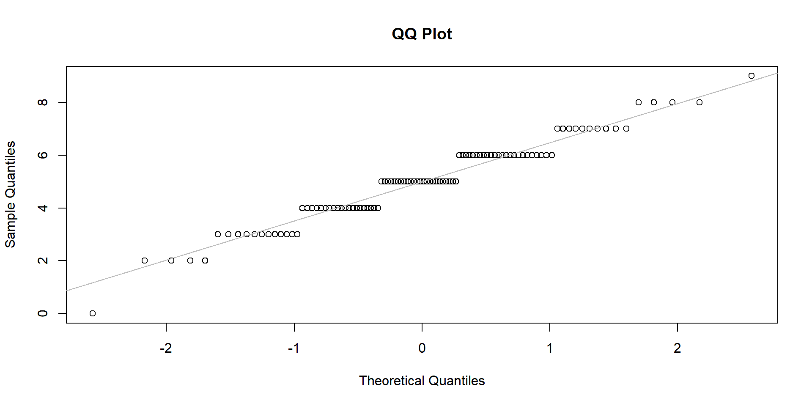
expand for full code
Chi-squared test for given probabilities
data: observed_table
X-squared = 49.096, df = 99, p-value = 1将实验处理记为A，干预组为A1，控制组为A2。
根据经验，使用特定量表测量焦虑时，总分是连续数据，均值约为70，标准差约为10。
问题：我们能否生成一批假数据，来帮助完成数据分析，并估计合理的样本量？
回答：可假定控制组的正态分布的均值为70，标准差为10；干预组的正态分布的均值为75，标准差为10。借此生成模拟数据。
参数恢复
参数恢复：模型从数据中”恢复”参数真实值的过程。
参数恢复的好坏，可帮助我们判断某个模型的可靠性和有效性。如果一个模型具有良好的参数恢复，这意味着它能够准确地估计数据的参数，因此可以放心地使用它来做出预测或从数据中得出结论。

设置模型的参数值，利用生成模型模拟样本量为n的假数据，重复这个过程若干次
对生成的假数据进行参数估计，求出参数的置信区间
将假数据的参数的置信区间与模型的参数值进行比较，查看共有多少次假数据的参数的置信区间包含模型参数值。
将实验处理记为A，干预组为A1，控制组为A2。
为进行模拟，假定控制组的正态分布的均值为70，标准差为10；干预组的正态分布的均值为75，标准差为10。
即，Cohen’s d = 0.5
然后通过参数恢复来理解我们的实验设计。


我们可以看到随着样本量的变化，在效应量(Cohen’s d)为0.5和显著性水平为0.05的情况下，随着各组样本量不断增大，统计检验力不断增大。
要达到80%的统计检验力，我们需要各组人数均为65人左右，即需要搜集130名被试。

在NHST的框架下，在样本量为30的情况下，p值的分布情况

在NHST的框架下，在样本量为65的情况下，p值的分布情况

在NHST的框架下，在样本量为100的情况下，p值的分布情况

- 通过模拟数据，我们获得如下信息
- 可以进行独立样本t检验；
- 样本量是我们统计模型的一部分，具有关键作用；
- 样本量：
- 各组30人时，统计检验力< 0.5;
- 各组65人左右时，统计检验力约80%
模型恢复(Model recovery)
上述参数恢复中，我们以t-test这个线性模型为前提进行了一系列模拟，但这个模型是否足够好？
真实数据是如何产生，本身是我们未知，所以通常我们希望使用多个模型来分析数据。
在使用这些模型拟合真实数据时，需要比较不同模型之间是否有区分度和有效。

首先，选择可能的模型
用这些模型分别生成各自的假数据
分别用所有模型对所有假数据进行拟合
对每批数据的多个模型进行模型比较，得到胜出的模型
重复上述过程n次，得到每个生成模型中最佳拟合模型的比例
以两个有区分度的模型为例。
二项分布的广义线性模型
正态分布的线性模型
- 生成模型：二项分布的GLM


- 拟合模型

生成模型2：正态分布的LM
- 线性模拟数据进行标准化，再按照正负转化为二分变量


- 拟合模型


总结
Bootstrap
Simulation
参数恢复
模型恢复
Group Project
展示时间：2024.1.2
提交形式：PPT(展示)、报告(上交)、数据(上交)
小组形式：每组5-6人，每组选出一名组长
作业内容
每个小组选择相应的问题
查阅资料，对该数据的基本情况进行描述
选取感兴趣的问题进行探究
将结果整理成文字报告，并用ppt进行展示
数据来源
Eisenberg的数据，使用本学期学习到的统计方法对它进行分析，尽量避免与上学期的统计方法雷同；
期刊cognition或psychological science上提供原始数据的文章，对数据分析部分进行重复，不需要重复全部结果，重复部分结果即可；
Estimating the reproducibility of psychological science提供的数据进行重复。
相关链接
Cognition:https://www.sciencedirect.com/journal/cognition/issues
Psychological science:https://journals.sagepub.com/home/pss
Open science collaboration(2015) OSF: https://osf.io/ezcuj/
Nature human behavior: https://www.nature.com/nathumbehav/
Nature communications: https://www.nature.com/ncomms/
Science advances: https://www.science.org/journal/sciadv
报告内容
小组成员信息、分工
小组想要研究的问题
该数据的基本情况
完整的数据分析流程
描述性统计结果 + 可视化
模型选取 + 预设检验
统计结果 + 可视化
讨论
结论
建议
格式标准，参照APA格式
结构完整，语句通顺，数据真实
内容美观
建议使用R进行操作
评分标准
PPT展示为全班同学对非本组作业进行评分的平均值。
胡传鹏老师、两位助教、各小组组长对非本组作业报告进行评分取平均值。